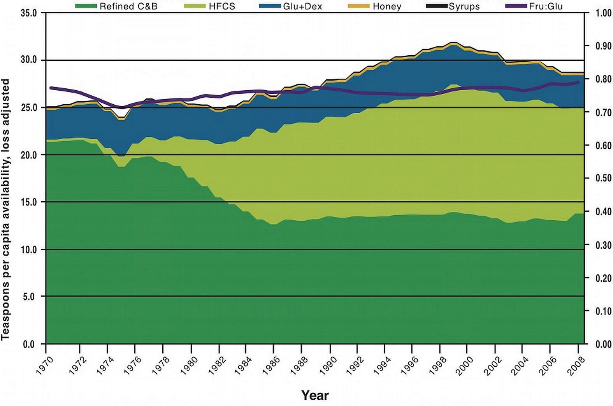
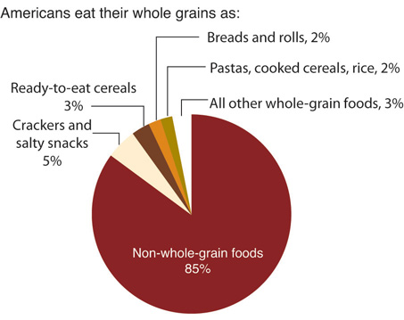

Can America blame its obesity epidemic on the higher consumption of added sugars and refined grains? This is a hotly debated topic by both the scientific community and the general public. In this section, we will give a brief overview of the scientific evidence.
Figure 4.9 Sugar Consumption (in Teaspoons) from Various Sources
The Food and Nutrition Board of the Institute of Medicine (IOM) defines added sugarsSugars and syrups that are added to foods during processing or preparation. as “sugars and syrups that are added to foods during processing or preparation.” The IOM goes on to state, “Major sources of added sugars include soft drinks, sports drinks, cakes, cookies, pies, fruitades, fruit punch, dairy desserts, and candy.” Processed foods, even microwaveable dinners, also contain added sugars. Added sugars do not include sugars that occur naturally in whole foods (such as an apple), but do include natural sugars such as brown sugar, corn syrup, dextrose, fructose, fruit juice concentrates, maple syrup, sucrose, and raw sugar that are then added to create other foods (such as cookies). Currently, nutrition labels do not distinguish between added and naturally occurring sugars and give only the total sugar content, making it difficult for consumers to determine their consumption of added sugars. Results from a survey of forty-two thousand Americans reports that in 2008 the average intake of added sugars is 15 percent of total calories, a drop from 18 percent of total calories in 2000.Welsh J. A. et al. “Consumption of Added Sugars Is Decreasing in the United States.” Am J Clin Nutr 94, no. 3 (2011): 726–34. http://www.ncbi.nlm.nih.gov/pubmed/21753067. This is still above the recommended intake of less than 10 percent of total calories. The US Department of Agriculture (USDA) reports that sugar consumption in the American diet in 2008 was, on average, 28 teaspoons per day (Figure 4.9 "Sugar Consumption (in Teaspoons) from Various Sources").
To understand the magnitude of the health problem in the United States consider this—in the United States approximately 130 million adults are overweight, and 30 percent of them are considered obese. The obesity epidemic has reached young adults and children and will markedly affect the prevalence of serious health consequences in adulthood. Health consequences linked to being overweight or obese include Type 2 diabetes, cardiovascular disease, arthritis, depression, and some cancers. An infatuation with sugary foods and refined grains likely contributes to the epidemic proportion of people who are overweight or obese in this country, but so do the consumption of high-calorie foods that contain too much saturated fat and the sedentary lifestyle of most Americans. There is much disagreement over whether high-carbohydrate diets increase weight-gain and disease risk, especially when calories are not significantly higher between compared diets. Many scientific studies demonstrate positive correlations between diets high in added sugars with weight gain and disease risk, but some others do not show a significant relationship. In regard to refined grains, there are no studies that show consumption of refined grains increases weight gain or disease risk. What is clear, however, is that getting more of your carbohydrates from dietary sources containing whole grains instead of refined grains stimulates weight loss and reduces disease risk.
A major source of added sugars in the American diet is soft drinks. There is consistent scientific evidence that consuming sugary soft drinks increases weight gain and disease risk. An analysis of over thirty studies in the American Journal of Clinical Nutrition concluded that there is much evidence to indicate higher consumption of sugar-sweetened beverages is linked with weight gain and obesity.Malik, V. S., M. B. Schulze, and F. B. Hu. “Intake of Sugar-Sweetened Beverages and Weight Gain: A Systematic Review.” Am J Clin Nutr 84, no. 2 (2006): 274–88. http://www.ajcn.org/content/84/2/274.long. A study at the Harvard School of Public Health linked the consumption of sugary soft drinks to an increased risk for heart disease.Harvard School of Public Health. “Public HealthTakes Aim at Sugar and Salt.” Accessed September 30, 2011. http://www.hsph.harvard.edu/news/hphr/fall-2009/sugar-and-salt.html. While the sugar and refined grains and weight debate rages on, the results of all of these studies has led some public health organizations like the American Heart Association (AHA) to recommend even a lower intake of sugar per day (fewer than 9 teaspoons per day for men and fewer than 6 teaspoons for women) than what used to be deemed acceptable. After its 2010 scientific conference on added sugars, the AHA made the following related dietary recommendations:
Before high-fructose corn syrup (HCFS) was marketed as the best food and beverage sweetener, sucrose (table sugar) was the number-one sweetener in America. (Recall that sucrose, or table sugar, is a disaccharide consisting of one glucose unit and one fructose unit.) HFCS also contains the simple sugars fructose and glucose, but with fructose at a slightly higher concentration. In the production of HFCS, corn starch is broken down to glucose and fructose, and some of the glucose is then converted to fructose. Fructose is sweeter than glucose; hence many food manufacturers choose to sweeten foods with HFCS. HFCS is used as a sweetener for carbonated beverages, condiments, cereals, and a great variety of other processed foods.
Some scientists, public health personnel, and healthcare providers believe that fructose is the cause of the obesity epidemic and its associated health consequences. The majority of their evidence stems from the observation that since the early 1970s the number of overweight or obese Americans has dramatically increased and so has the consumption of foods containing HFCS. However, as discussed, so has the consumption of added sugars in general. Animal studies that fuel the fructose opponents show fructose is not used to produce energy in the body; instead it is mostly converted to fat in the liver—potentially contributing to insulin resistance and the development of Type 2 diabetes. Additionally, fructose does not stimulate the release of certain appetite-suppressing hormones, like insulin, as glucose does. Thus, a diet high in fructose could potentially stimulate fat deposition and weight gain.
In human studies, excessive fructose intake has sometimes been associated with weight gain, but results are inconsistent. Moderate fructose intake is not associated with weight gain at all. Moreover, other studies show that some fructose in the diet actually improves glucose metabolism especially in people with Type 2 diabetes.Elliott, S. S. et al. “Fructose, Weight Gain, and the Insulin Resistance Syndrome.” Am J Clin Nutr 76, no. 5 (2002): 911–22. http://www.ajcn.org/content/76/5/911.full. In fact, people with diabetes were once advised to use fructose as an alternative sweetener to table sugar. Overall, there is no good evidence that moderate fructose consumption contributes to weight gain and chronic disease. At this time conclusive evidence is not available on whether fructose is any worse than any other added sugar in increasing the risk for obesity, Type 2 diabetes, and cardiovascular disease.
The USDA is in the process of developing a database on the added sugars in many different foods and has made the information accessible. You might be frightened by what you discover when perusing it. For instance, one 6-ounce container (170 grams) of flavored yogurt contains 20 grams (5 teaspoons) of added sugars.
http://www.ars.usda.gov/SP2UserFiles/Place/12354500/Data/Add_Sug/addsug01.pdf
Oral health refers not only to healthy teeth and gums, but also to the health of all the supporting tissues in the mouth such as ligaments, nerves, jawbone, chewing muscles, and salivary glands. Over ten years ago the Surgeon General produced its first report dedicated to oral health, stating that oral health and health in general are not separate entities.Surgeon General. “National Call to Action to Promote Oral Health.” Accessed September 30, 2011. http://www.surgeongeneral.gov/library/calls/oralhealth/nationalcalltoaction.html. Instead, oral health is an integral part of overall health and well-being. Soft drinks, sports drinks, candies, desserts, and fruit juices are the main sources of “fermentable sugarsSugars such as glucose, fructose, and maltose that are easily metabolized by bacteria in a process known as fermentation.” in the American diet. (Fermentable sugars are those that are easily metabolized by bacteria in a process known as fermentation. Glucose, fructose, and maltose are three examples.) Bacteria that inhabit the mouth metabolize fermentable sugars and starches in refined grains to acids that erode tooth enamel and deeper bone tissues. The acid creates holes (cavities) in the teeth that can be extremely painful (Figure 4.10 "Gingivitis"). Gums are also damaged by bacteria produced by acids, leading to gingivitis (characterized by inflamed and bleeding gums). Saliva is actually a natural mouthwash that neutralizes the acids and aids in building up teeth that have been damaged.
According to Healthy People 2010, 23 percent of US children have cavities by the age of four, and by second grade, one-half of all children in this country have at least one cavity.Continuing MCH Education in Oral Health. “Oral Health and Health Care.” Accessed September 30, 2011. http://ccnmtl.columbia.edu/projects/otm/index.html. Cavities are an epidemic health problem in the United States and are associated with poor diet, but other contributors include poor dental hygiene and the inaccessibility to regular oral health care. A review in Academic Pediatrics reports that “frequent consumption of fast-releasing carbohydrates, primarily in the form of dietary sugars, is significantly associated with increased dental caries risk.”Mobley C., PhD, et al. “The Contribution of Dietary Factors to Dental Caries and Disparities in Caries.” Acad Pediatr 9, no. 6 (2009): 410–14. doi: 10.1016/j.acap.2009.09.008. In regards to sugary soft drinks, the American Dental Association says that drinking sugary soft drinks increases the risk of decay formation.American Dental Association. “Diet and Oral Health.” Accessed September 30, 2011. http://www.ada.org/2984.aspx#eatoothdecay.
The Harvard School of Public Health Nutrition Source has developed a guide called “How Sweet Is It?” that notes the calories and sugar contents of many popular beverages. Visit the site to determine drinks that are better for your oral and overall health.
http://www.hsph.harvard.edu/nutritionsource/files/how-sweet-is-it-color.pdf
Save your teeth and gums and choose to drink a beverage that does not contain excess added sugars. An idea: brew some raspberry tea, add some sparkling mineral water, a raspberry or two, some ice, and a mint leaf. Then sit back and refresh.
Since the early 1990s, marketers of low-carbohydrate diets have bombarded us with the idea that eating fewer carbohydrates promotes weight loss and that these diets are superior to others in their effects on weight loss and overall health. The most famous of these low-carbohydrate diets is the Atkin’s diet. Others include the “South Beach” diet, the “Zone” diet, and the “Earth” diet. Despite the claims these diets make, there is little scientific evidence to support that low-carbohydrate diets are significantly better than other diets in promoting long-term weight loss. A study in The Nutritional Journal concluded that all diets, (independent of carbohydrate, fat, and protein content) that incorporated an exercise regimen significantly decreased weight and waist circumference in obese women.Kerksick, C. M. et al. “Changes in Weight Loss, Body Composition, and Cardiovascular Disease Risk after Altering Macronutrient Distributions During a Regular Exercise Program in Obese Women.” J Nutr 9, no. 59 (2010). doi: 10.1186/1475-2891-9-59. Some studies do provide evidence that in comparison to other diets, low-carbohydrate diets improve insulin levels and other risk factors for Type 2 diabetes and cardiovascular disease. The overall scientific consensus is that consuming fewer calories in a balanced diet will promote health and stimulate weight loss, with significantly better results achieved when combined with regular exercise.
While excessive consumption of fast-releasing carbohydrates is potentially bad for your health, consuming more slow-releasing carbohydrates is extremely beneficial to health. There is a wealth of scientific evidence supporting that replacing refined grains with whole grains decreases the risk for obesity, Type 2 diabetes, and cardiovascular disease. Whole grains are great dietary sources of fiber, vitamins, minerals, healthy fats, and a vast amount of beneficial plant chemicals, all of which contribute to the effects of whole grains on health. Americans typically do not consume the recommended amount of whole grains, which is 50 percent or more of grains from whole grains (Figure 4.11 "Grain Consumption Statistics in America").
Diets high in whole grains have repeatedly been shown to decrease weight. A large group of studies all support that consuming more than two servings of whole grains per day reduces one’s chances of getting Type 2 diabetes by 21 percent.de Munter, J. S. L. et al. “Whole Grain, Bran, and Germ Intake and Risk of Type 2 Diabetes: A Prospective Cohort Study and Systematic Review.” PLoS Medicine, no. 8 (2007): e261. doi: 10.1371/journal.med.0040261. The Nurses’ Health Study found that women who consumed two to three servings of whole grain products daily were 30 percent less likely to have a heart attack.Liu, S. et al. “Whole-Grain Consumption and Risk of Coronary Heart Disease: Results from the Nurses’ Health Study.” Am J Clin Nutr 70, no. 3 (1999): 412–19. http://www.ajcn.org/content/70/3/412.long. The AHA makes the following statements on whole grains:
Figure 4.11 Grain Consumption Statistics in America
Source: Economic Research Service. http://www.ers.usda.gov/data-products/commodity-consumption-by-population-characteristics/documentation.aspx.
A substantial health benefit of whole grain foods is that fiber actively supports digestion and optimizes colon health. (This can be more specifically attributed to the insoluble fiber content of whole grains.) There is good evidence supporting that insoluble fiber prevents the irritating problem of constipation and the development of diverticulosis and diverticulitis. DiverticulosisA benign condition characterized by out-pocketings of the colon. is a benign condition characterized by out-pocketings of the colon. DiverticulitisA condition that occurs when the out-pocketings in the lining of the colon become inflamed. Symptoms include lower abdominal pain, nausea, and alternating between constipation and diarrhea. occurs when the out-pocketings in the lining of the colon become inflamed. Interestingly, diverticulitis did not make its medical debut until the early 1900s, and in 1971 was defined as a deficiency of whole-grain fiber. According to the National Digestive Diseases Information Clearinghouse, 10 percent of Americans over the age of forty have diverticulosis, and 50 percent of people over the age of sixty have the disorder.National Digestive Diseases Information Clearinghouse, a service of National Institute of Diabetes and Digestive and Kidney Diseases, National Institute of Health. “Diverticulosis and Diverticulitis.” NIH Publication No. 08-1163 (July 2008). http://digestive.niddk.nih.gov/ddiseases/pubs/diverticulosis/. Ten to 25 percent of people who have diverticulosis go on to develop diverticulitis.National Digestive Diseases Information Clearinghouse, a service of National Institute of Diabetes and Digestive and Kidney Diseases, National Institute of Health. “Diverticulosis and Diverticulitis.” NIH Publication No. 08-1163 (July 2008). Symptoms include lower abdominal pain, nausea, and alternating between constipation and diarrhea.
The chances of developing diverticulosis can be reduced with fiber intake because of what the breakdown products of the fiber do for the colon. The bacterial breakdown of fiber in the large intestine releases short-chain fatty acids. These molecules have been found to nourish colonic cells, inhibit colonic inflammation, and stimulate the immune system (thereby providing protection of the colon from harmful substances). Additionally, the bacterial indigestible fiber, mostly insoluble, increases stool bulk and softness increasing transit time in the large intestine and facilitating feces elimination. One phenomenon of consuming foods high in fiber is increased gas, since the byproducts of bacterial digestion of fiber are gases.
Figure 4.12 Diverticulitis: A Disease of Fiber Deficiency

Some studies have found a link between high dietary-fiber intake and a decreased risk for colon cancer. However an analysis of several studies, published in the Journal of the American Medical Association in 2005, did not find that dietary-fiber intake was associated with a reduction in colon cancer risk.Park, Y. et al. “Dietary Fiber Intake and Risk of Colorectal Cancer.” JAMA 294, no. 22 (2005): 2849–57. doi: 10.1001/jama.294.22.2849. There is some evidence that specific fiber types (such as inulin) may protect against colon cancer, but more studies are needed to conclusively determine how certain fiber types (and at what dose) inhibit colon cancer development.
Have a debate in your classroom on the USDA restriction on the sale of carbonated beverages in schools. Find out more information on this topic by reading “Soft Drinks and School-Age Children: Trends, Effects, Solutions,” developed by the North Carolina School Nutrition Action Committee.
Learn about the “Australian Paradox:” How decreased sugar consumption paralleled increased rates of overweight and obese people. Read the study and have a classroom debate over the weight of evidence that supports that diets high in added sugars actually increase weight gain.